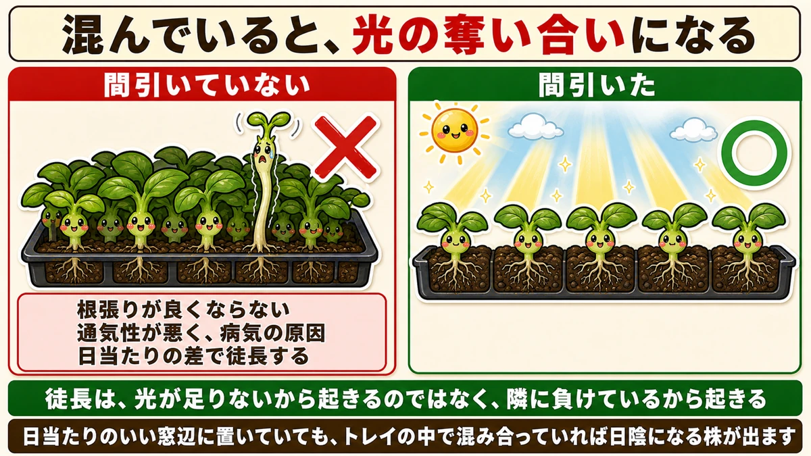
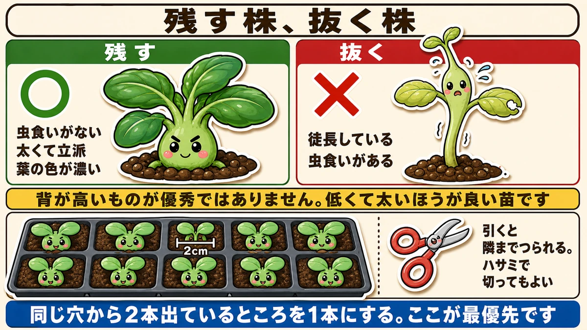
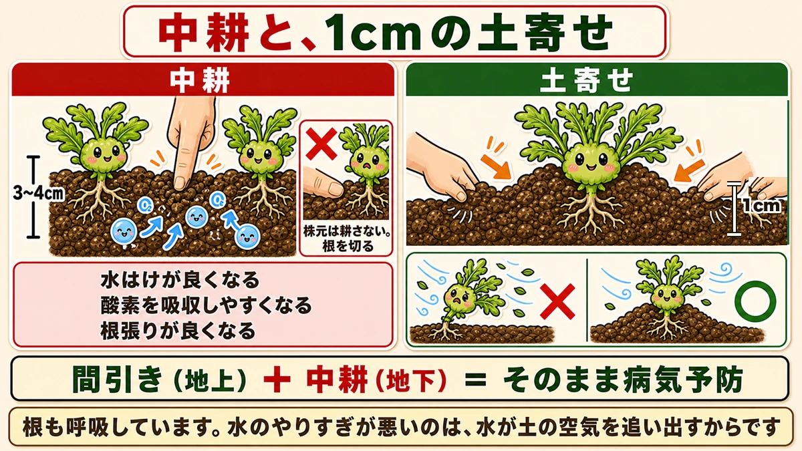
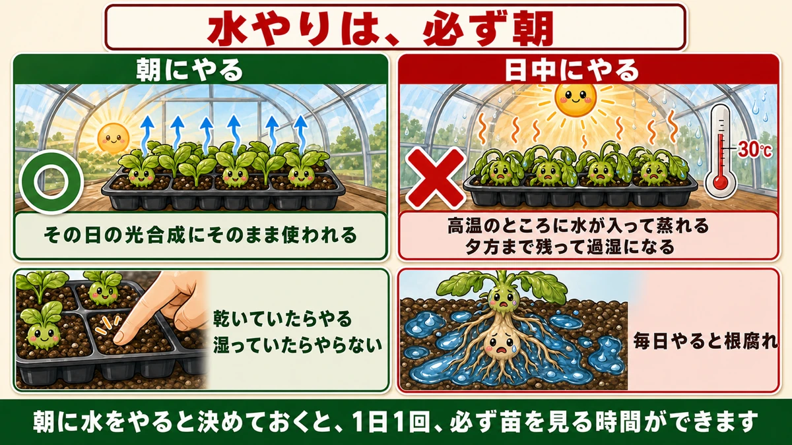

がっしり苗の作り方｜芽が出たあとの間引き・中耕・土寄せ・水やり・鉢上げのコツ
どうも、8150（えいこう）です🌱 家庭菜園歴8年、理科の教員免許を持っていて、有機・無農薬で野菜を育てています。
📖 この記事の目次
この記事で分かること
- 芽が出たあとの苗を、がっしり育てるための作業は、大きく4つ。間引き、中耕（ちゅうこう）、土寄せ、水やりです。
- 間引きをしないと、根の張りが悪くなり、風通しが悪くなって病気が出やすくなり、日の当たり方の差でひょろひょろの苗（徒長苗）も出てきます。
- 中耕は、株と株のあいだの土を浅くほぐす作業です。根に空気が届きやすくなり、根の張りがよくなります。
- 小さな苗には、株元に1cmくらいの土寄せをすると、ぐらつきにくくなります。
- 水やりは、朝がおすすめ。毎日決まってやるのではなく、土が乾いたらやります。
- 本葉が出て落ち着いたら、ひとまわり大きなポットに移す（鉢上げ）と、根がのびのび育ちます。
種をまいて、小さな芽がいっせいに顔を出したときは、本当にうれしいですよね。
でも、そのあと、「なんだかひょろひょろ伸びてきた」「倒れそうな苗がある」「隣どうしで混みあっている」と、心配になることも多いと思います。
安心してください。芽が出たあとのちょっとした作業で、苗は見ちがえるほどがっしりします。この記事では、芽が出たあとにやる4つの作業と、ポットに移すタイミングまで、順番に書いていきます。

早見：がっしり苗の基本（ひと目で分かる目安）
芽が出たあとの4つの作業
- 間引き：混みあったところ、同じ場所から2本以上出ているところを優先して抜く
- 中耕：株と株のあいだの土を、浅くほぐす。株元は耕さない
- 土寄せ：株元に、1cmくらい土を寄せて、苗を安定させる
- 水やり：朝にやる。土が乾いたらやり、乾いていなければやらない
いい苗のサイン
- 茎が太く、がっしりしている
- 背が低めで、葉と葉のあいだ（節間）がつまっている
- 葉の色が濃く、形がそろっている
徒長苗（ひょろひょろの苗）のサイン
- 茎が細く、ひょろっと長い
- 葉と葉のあいだが長く、すかすか
- 葉の色が薄い
- ちょっとした風で倒れる
徒長の主な原因
- 混みあっていて、光の奪い合いになっている
- 日当たりが足りない
- 水のやりすぎ
- 温度が高すぎる（特に夜）
- 肥料が多すぎる
育苗に使う道具と土
- セルトレイ：小さな穴がたくさん並んだトレイ。1つの穴に1〜2粒ずつまけて、たくさんの苗を同じ大きさに育てやすい
- ポット（育苗ポット）：直径7.5〜9cmくらいの黒いポットがよく使われる。鉢上げや、大きめの苗を育てるのに
- 育苗箱：浅い箱に、すじまきしてたくさんの苗を育てる。玉ねぎやねぎの苗づくりに
- 種まき用の土：肥料が控えめで、水はけと水もちのバランスがよい。芽を出させる段階に向いている
- 培養土：肥料が入っていて、鉢上げのあとの苗を育てるのに向いている
- 霧吹き、じょうろ：芽が出るまでは霧吹き、芽が出たら細かいはす口のじょうろで
芽が出るまでの管理
がっしり苗は、芽が出たあとの管理で決まりますが、その前の、芽が出るまでの管理も大切です。
- 種をまいたら、土を乾かさないように、新聞紙や不織布をかぶせておく
- 芽が出始めたら、すぐにかぶせたものを外して、日に当てる
- ここで外すのが1日遅れるだけで、苗はひょろひょろに伸びてしまう
芽が出始めたかどうか、毎日のぞくようにしてください。芽が出た瞬間から、光に当てるのが、がっしり苗の第一歩です。
セルトレイとポット、どちらで育てるか
- セルトレイ：たくさんの苗を、場所をとらずに育てられる。苗の大きさがそろいやすい。ただし、1つの穴の土が少ないので乾きやすく、根がいっぱいになるのも早い
- ポット：土の量が多いので、乾きにくく、大きめの苗まで育てられる。場所はとる
たくさんの苗が必要な秋冬野菜や、玉ねぎ・ねぎなどはセルトレイや育苗箱、トマトやなすなど株数の少ない夏野菜はポット、というふうに使い分けると便利です。セルトレイで芽を出させてから、ポットに鉢上げする、という組み合わせもよく使われます。
作業の手順
ここからは、芽が出たあとにやる作業を、順番に書いていきます。
手順1：芽がそろったら、混み具合を見る
芽がそろって出てきたら、まず全体の混み具合を見ます。
- 同じ場所から、2本、3本とかたまって出ている
- 隣の苗と、葉がふれ合うほど近い
- まわりより、明らかに背が高く、ひょろっとしている苗がある
こうした状態なら、間引きの時期です。
間引きをしないでいると、苗どうしが光や水、養分を奪い合います。根の張りが悪くなり、葉が混みあって風通しが悪くなって、病気が出やすくなります。日の当たり方にも差が出て、陰になった苗がひょろひょろに伸びてしまうこともあります。
手順2：1回目の間引き
1回目の間引きでは、次のところを優先して抜きます。
- 同じ場所から2本以上出ているところ
- 混みあっているところ
苗どうしの間かくが、2cmくらいになるのが目安です（苗床にすじまきした場合）。
ただし、間引きは早すぎてもよくない、という説明もあります。芽が出たばかりの小さいうちは、まわりの苗と支え合いながら育つ（共育ち）ので、葉が少し重なり合うくらいになってから間引くといい、という考え方です。混み具合を見ながら、「葉がふれ合ってきたら」を目安にしてください。

手順3：残す株を選ぶ
間引くときは、どの苗を残すかが大事です。
残したい苗：
- 茎が太く、がっしりしている
- 葉の形がきれいで、色が濃い
- 背が低めで、葉と葉のあいだがつまっている
- 虫に食べられたあとがない
抜く苗：
- ひょろっと背だけ高い苗
- 葉の形がゆがんでいる、色が薄い苗
- 虫に食べられた苗
- 明らかに育ちが遅れている苗
背の高い苗のほうが元気そうに見えますが、ひょろっと伸びた苗は、がっしりした苗に比べて弱いことが多いです。迷ったら、茎がいちばん太くて、背の低い苗を残してください。それがいちばん丈夫に育つ苗です。見た目の大きさにまどわされないでください。見た目の大きさより、茎の太さと葉のようすで選んでください。
手順4：残す株を傷めない抜き方
間引くときは、残す株の根を傷めないように気をつけます。
- 抜く苗の株元を指でつまんで、まっすぐ上にそっと引き抜く
- 根がからみあっていて、抜くと隣の苗まで動いてしまうときは、はさみで根元を切る
- 抜いたあとは、残した苗の株元を軽く押さえて、ぐらつかないようにする
特に、玉ねぎやねぎのように苗が密集しているものは、引き抜くと隣の苗まで一緒に抜けてしまうことがあります。そういうときは、はさみで切るのが安全です。
手順5：2回目以降の間引き
苗が育つにつれて、また混みあってきます。葉がふれ合うようになったら、2回目、3回目と、少しずつ間引いて間かくを広げていきます。
一度に減らしすぎると、残した苗が風で倒れやすくなったり、乾きやすくなったりします。何回かに分けて、少しずつ減らすのがコツです。
大根やかぶのように、最終的に1本にする野菜も、一度に1本まで減らさず、3本、2本、1本と段階を踏んで減らしていきます。
手順6：中耕をする
間引きが終わったら、そのまま中耕をします。中耕とは、株と株のあいだの土を、浅くほぐす作業です。
- 株と株のあいだを、指や小さな道具で浅くほぐす
- 深くは掘らない。表面を軽くほぐす程度
- 株元は耕さない（根を傷めるため）
土の表面は、水やりや雨でだんだん固くなっていきます。固くなった土をほぐすと、土の中に空気が入りやすくなり、根が酸素を吸いやすくなって、根の張りがよくなります。
ただし、雨のあとなど、土が湿りすぎているときは、中耕は控えます。湿った土をいじると、かえって固まってしまうからです。

中耕のタイミング
中耕は、いつやってもいいわけではありません。
- 土の表面が固くなってきたとき
- 雨のあと、土が少し乾いてきたころ（湿りすぎているときは避ける）
- 間引きのついで
間引きをすると、抜いたあとに小さな穴があいて、まわりの土がゆるみます。そのついでに株間をほぐしておけば、作業が一度ですみます。
手順7：土寄せをする
中耕と同時に、株元に少し土を寄せます。
- ほぐした土を、苗の株元に寄せる
- 量は、1cmくらいで十分
- 成長点（いちばん上の、新しい葉が出てくるところ）は埋めない
芽が出たばかりの苗は、茎が細く、根元がぐらぐらしています。株元に少し土を寄せると、苗がしっかり立って、風で倒れにくくなります。
ただし、土を寄せすぎるのはよくありません。にんじんなど、成長点が株元に近い野菜は、埋めると育ちが止まってしまいます。ねぎも、苗の段階で土をかぶせすぎると、病気が出やすくなるという説明があります。1cmくらい、と覚えておいてください。
手順8：水やりは、朝に
苗の水やりは、朝にやるのがおすすめです。
- 朝にやると、日中の光合成にしっかり水が使われる
- 日中にやると、暑さで水が温まったり、土が水分過多になったりする
- 夕方にやると、夜のあいだ土が湿ったままになり、苗がひょろひょろ伸びやすくなる
そして大事なのが、毎日決まってやるものではない、ということです。
- 土の表面が乾いていたら、たっぷりやる
- 土が湿っていたら、やらない
水が多すぎると、土の中の空気が少なくなって、根が呼吸できなくなります。また、水がいつもたっぷりあると、苗はひょろひょろ伸びやすくなります。「乾いたらやる」というメリハリをつけると、根が水を求めて伸び、がっしりした苗になります。

手順9：水やりのついでに、苗を見る
水やりは、苗のようすを見るいい機会です。
- ひょろひょろ伸びている苗はないか
- 葉の色が薄くなっていないか
- 葉の裏に虫がいないか
- 混みあってきていないか
毎朝の水やりのついでに、苗の小さな変化に気づけると、早めに手を打てます。昨日と比べて背が急に伸びていないか、葉の色が変わっていないか。毎日見ていると、少しの違いにも気づけるようになります。
手順10：鉢上げをする
セルトレイや小さなポットで育てている苗は、本葉が出てきて落ち着いたら、ひとまわり大きなポットに植えかえます。これを「鉢上げ」と言います。
- セルトレイから、苗を土ごとそっと抜く
- ひとまわり大きなポットに、新しい培養土を入れて植えかえる
- 植えかえたら、たっぷり水をやる
- 植えかえた直後は、強い日差しを避けて、落ち着くまで半日陰に置く
小さな容器のままだと、根がいっぱいになって、苗の育ちが止まってしまいます。鉢上げをすると、根がのびのび伸びられるようになり、がっしりした苗に育ちます。
苗を移すときは、茎を持たずに、根鉢（根と土のかたまり）や葉を持つようにします。葉なら少し傷ついても、また新しい葉が出てきます。茎は細くて傷つきやすく、傷むとそこから先が育たなくなるからです。
野菜ごとの育苗のポイント
トマト
- 芽が出るには25〜30度くらいの暖かさが必要。春先は保温して芽を出させる
- 芽が出たら、日によく当てる。光が足りないと、すぐにひょろひょろになる
- 本葉が出てきたら、ポットに鉢上げする
- 苗を作る期間は、種まきから60日くらいが目安
なす・ピーマン
- トマトより高い温度が必要で、芽が出るのにも時間がかかる
- 苗を作る期間が80〜90日くらいと長いので、早めに種をまく
- 寒さに弱いので、夜の冷えこみに気をつける
きゅうり
- 育つのが早く、苗を作る期間は40日くらい
- 本葉が2〜3枚くらいで、畑に植えられる大きさになる
- 苗が大きくなりすぎると、植えたあとの根づきが悪くなるので、植え遅れないように
キャベツ・ブロッコリー・白菜
- 夏に苗を作るので、暑さ対策が大切。半日陰と風通しを
- 虫がつきやすいので、防虫ネットで囲う
- 間引いて1つの穴に1本にし、本葉4〜5枚で畑に植える
レタス
- 暑いと芽が出にくい野菜。夏まきなら、涼しい場所で芽を出させる
- 光を好む種なので、土はごく薄くかける
玉ねぎ・ねぎ
- 育苗箱やセルトレイに、すじまきや数粒まきで育てる
- 乾燥が苦手なので、特にセルトレイでは乾かしすぎない
- 混みあってきたら間引く。密集しているので、抜くと隣も抜けやすい。はさみで切るのが安全
- 葉が伸びすぎて倒れるようなら、先を少し切りそろえると、苗がしっかりする、という方法もある
鉢上げのくわしい手順
- 植えかえる前に、セルトレイやポットの苗に水をやって、土を湿らせておく（根鉢がくずれにくくなる）
- 新しいポットに、培養土を半分くらい入れておく
- セルトレイの底を指で押し上げるか、割りばしでそっと持ち上げて、苗を土ごと抜く
- 苗の葉や根鉢を持って、新しいポットのまん中に置く
- まわりに培養土を足して、根鉢の上の面が少しかくれるくらいにする
- ポットのふちを軽くトントンとたたいて、土を落ち着かせる
- たっぷり水をやり、数日は強い日差しを避けて半日陰に置く
鉢上げのあと、苗が少ししおれることがありますが、新しい土に根が伸びてくれば元に戻ります。
寒い時期の苗の保温
春先に夏野菜の苗を作るときは、寒さから守る工夫が必要です。
- 発泡スチロールの箱：保温力が高く、ふたをすれば夜の冷えこみから守れる
- 衣装ケースやプラスチックの箱：透明なものなら、ふたをしたまま日に当てられる
- 簡易温室：棚にビニールのカバーがかかったもの。ベランダにも置ける
- 育苗用の電熱マット：温度を一定に保てる。芽を出させるのに便利
どの方法でも、晴れた日の昼は中が暑くなりすぎるので、ふたやカバーを開けて換気してください。夜は閉めて保温する、という切りかえが大切です。
暑い時期の苗づくり
秋冬野菜の苗は、夏に作る
キャベツやブロッコリー、白菜などの秋冬野菜の苗は、真夏に作ることになります。夏は、苗にとって厳しい季節です。
- 風通しのよい、半日陰の場所に置く
- 西日が強く当たる場所は避ける
- 苗床やポットを、地面から少し浮かせて置くと、照り返しの熱を避けられる
- 遮光ネットで、強い日差しをやわらげる
夏の水やりは、乾き具合を見て回数を変える
夏は、朝に水をやっても、夕方にはからからに乾いていることがあります。ポットやセルトレイは、特に乾きやすいです。
夏の育苗では、朝夕の2回くらい水やりが必要になる、という説明もあります。朝にやるのを基本にして、夕方に土がからからになっていたら、もう一度やる、と考えてください。
苗を囲うなら、換気を忘れずに
寒い時期に苗を保温するためにビニールや衣装ケースで囲っている場合、晴れた日の昼は、中がとても暑くなります。芽が出たあとは、日中は開けて風を通し、夜は閉めて保温する、という切りかえを忘れないでください。閉めたままだと、苗が蒸れて、ひょろひょろに伸びてしまいます。
畑に植える前に、苗を外に慣らす
家の中や、囲いの中で育てた苗は、畑の強い日差しや風に慣れていません。植える1週間くらい前から、少しずつ外に出す時間を長くして、外の環境に慣らしておくと、植えたあとの根づきがよくなります。
- 最初の数日：日中の数時間だけ外に出す
- 慣れてきたら：日中はずっと外に、夜は取りこむ
- 植える直前：夜も外に出しておく（寒すぎない時期なら）
外に慣らすと、苗の葉が厚くなり、茎もさらにがっしりしてきます。
毎日の見回りチェックリスト
- 朝：土の乾き具合を見て、乾いていれば水をやる
- 朝：苗の背丈と茎の太さを見る。ひょろひょろの苗がないか
- 朝：葉の色と、葉の裏の虫を見る
- 晴れた日の昼：囲いをしているなら換気。夏は日差しが強すぎないか
- 夕方：夏は土がからからになっていないか。囲いは閉める
- 数日おき：混み具合を見て、必要なら間引きと中耕、土寄せ
慣れてくれば、毎朝数分で回れるようになります。小さな変化に早く気づけるのが、いちばんの上達のコツです。
失敗の見分け方
苗がひょろひょろに伸びた
- 混みあっている：間引いて間かくを広げる
- 日当たりが足りない：日当たりのよい場所に移す
- 水が多い：土が乾いてからやるようにする
- 温度が高い：特に夜、暖かすぎないようにする。囲いをしているなら換気する
苗が倒れる
- 茎が細く、ひょろっとしている：徒長の原因を取り除く
- 株元がぐらぐら：1cmくらい土寄せする
- 根元が細くくびれて、倒れて枯れる：苗立枯病（なえたちがれびょう）の可能性。水のやりすぎや、蒸れが原因になることが多い
葉の色が薄い・黄色い
- 光が足りない
- 本葉が出てきて、土の養分が足りなくなってきた
- 水のやりすぎで、根が弱っている
鉢上げの時期に来ているなら、新しい土に植えかえると元気になることがあります。
土の表面に、白いカビや緑の苔が生えた
水のやりすぎや、風通しの悪さで土がいつも湿っていると、土の表面にカビや苔が生えることがあります。水やりの回数を減らし、風通しのよい場所に置いてください。表面の土を薄くこそげ取って、新しい土を少し足すのもいい方法です。
苗が、みんな同じ方向に傾いている
窓辺で育てていると、苗が光の来る方向へ傾いて伸びることがあります。ときどき鉢やトレイの向きを回して、まんべんなく光が当たるようにしてあげてください。
間引いたら、残した苗まで倒れた
一度に間引きすぎたか、抜くときに残す苗の根を傷めた可能性があります。株元に土を寄せて軽く押さえ、苗を立たせてあげてください。次からは、少しずつ間引くようにしましょう。
説明が分かれていること
間引きは早めか、葉が重なってからか
- 混みあったところ、同じ場所から出ているところを優先して、こまめに間引く、という説明
- あまり早く間引くと、苗どうしが支え合って育つ効果が薄れるので、葉が重なり合うくらいになってから間引く、という説明
どちらも、混みあいすぎる前に間引く、という点は共通しています。芽が出てすぐに全部減らすのではなく、葉がふれ合ってきたら、少しずつ、と考えるといいと思います。
水やりは朝だけか、朝夕か
- 育苗の水やりは、必ず朝にする、という説明
- 夏のポット育苗は乾きやすいので、朝夕2回くらい必要、という説明
- 育った夏野菜なら、朝でも夕方でもいい、という説明
苗の大きさと、季節によって変わります。基本は朝。夏で乾きが早いときは、夕方にも土を見て、からからなら足す、と考えてください。
中耕は必要か
- 中耕をすると、根の張りがよくなり、病気の予防にもなる、という説明
- 必ずしも中耕しなくてもいい、という説明
土の表面がかたくなっているなら中耕を、ふかふかのままなら無理にしなくても大丈夫です。湿りすぎているときは、控えてください。
玉ねぎの苗の水やり
- 玉ねぎやねぎの苗は乾燥が苦手なので、水やりを忘れないように、という説明
- 根をぐんぐん育てたい時期は、枯れない程度に水を控える、という説明
季節や苗の育ち具合によって変わります。セルトレイなど乾きやすい容器では、乾かしすぎに気をつけてください。
植えたあとの水
- 植えたあとは、どんな野菜でも必ず水をやる、という説明
- 植えたあとの水やりは、しばらく控えめにする、という説明
雨が降るかどうか、土の湿り具合、苗が根づいたかどうかで変わります。植えた日はたっぷり、そのあとは乾き具合を見て、というのが無難です。
よくある質問
Q. 間引いた苗は、どうすればいいですか？
A. 大根やかぶ、小松菜などの間引き菜は、おいしく食べられます。やわらかくて、育った野菜とはまた違ったおいしさがあります。みそ汁やおひたし、炒めものにどうぞ。キャベツやブロッコリーなどの苗は、元気なものなら、別のポットに植えかえて育てることもできます。
Q. 間引くのがもったいなくて、つい残してしまいます
A. 気持ちはよく分かります。でも、混みあったまま育てると、どの苗も細く弱くなってしまいます。少ない苗をがっしり育てるほうが、結果的にたくさん収穫できることが多いです。
Q. 中耕に、道具はいりますか？
A. 苗が小さいうちは、指や割りばしで十分です。株が大きくなってきたら、小さな熊手や、移植ごてを使うと楽です。根を傷めないように、浅くほぐしてください。
Q. 苗が徒長してしまいました。もう手遅れですか？
A. 手遅れではありません。日当たりのよい場所に移し、水を控えめにすれば、そこからはがっしり育っていきます。夜の温度が高すぎないかも見直してください。少し徒長した苗は、ポットに移すときや畑に植えるときに、少し深めに植えて、茎の一部を土に埋めて安定させる方法もあります（接ぎ木苗では、つぎ目を埋めないように注意）。
Q. 苗に肥料はいりますか？
A. 育苗用の土には、最初から少し肥料が入っていることが多いので、芽が出てすぐには肥料はいりません。本葉が増えてきて葉の色が薄くなってきたら、鉢上げで新しい土に植えかえるか、薄い液体肥料を少し与えます。肥料が多すぎると、苗がひょろひょろ伸びる原因になるので、控えめにしてください。
Q. 苗が倒れて、根元が細くくびれていました
A. 苗立枯病の可能性があります。土の中の菌が原因で、根元が細くなって倒れ、枯れてしまう病気です。水のやりすぎや、蒸れた環境で出やすくなります。倒れた苗は取り除き、ほかの苗は水やりを控えめにして、風通しをよくしてください。次に種をまくときは、新しい種まき用の土を使うと安心です。
Q. 間引きには、どんな道具を使えばいいですか？
A. 小さな苗なら、指でつまんで抜くのがいちばん手軽です。抜く前に土を少し湿らせておくと、根が切れにくく、すっと抜けます。苗が密集していて指が入らないときは、ピンセットが便利です。根がからんでいて抜くと隣まで動いてしまうときは、先の細いはさみで根元を切ってください。道具を使うと、残す苗を傷めにくくなります。
Q. プランターに直接種をまきました。間引きは同じですか？
A. 基本は同じです。プランターは土の量が限られているので、混みあいすぎると、苗どうしの奪い合いが畑以上に激しくなります。最終的に育てたい株数を考えて、少しずつ間引いてください。間引いた葉物は、ベビーリーフとしてサラダにも使えます。
Q. 苗に液体肥料をやってもいいですか？
A. 本葉が増えてきて、葉の色が薄くなってきたら、薄めた液体肥料を少し与えてもかまいません。ただし、濃すぎたり、回数が多すぎたりすると、苗がひょろひょろ伸びたり、根を傷めたりします。袋に書かれた倍率より薄めにして、ようすを見ながら使ってください。鉢上げで新しい土に植えかえる方法もあります。
Q. 苗の数が多すぎて、全部は植えられません
A. 元気な苗を選んで植え、残りは家族や友人に分けたり、プランターで育てたりするのはどうでしょう。多めに作っておくと、植えたあとに虫や鳥にやられたときの予備にもなります。予備の苗も、ポットで元気に育てておきましょう。
Q. 種を多くまきすぎて、びっしり芽が出てしまいました
A. 一度に全部を間引くと、残した苗が倒れたり、根を傷めたりするので、何回かに分けて減らしていきます。最初は、はさみで根元を切って、混みあっているところを少しずつ減らすと安全です。次からは、まく量を減らすか、セルトレイで1つの穴に1〜2粒ずつまくと、間引きの手間が減ります。
Q. 苗を買ってきた場合も、この記事の作業は必要ですか？
A. 買ってきた苗は、すでに間引きや鉢上げがすんでいることが多いです。すぐに畑に植えるなら、植える前に外に慣らすことと、植える前の水やりだけで大丈夫です。ポットのまましばらく育てる場合は、水やりの考え方や、日当たり、風通しは、この記事と同じように気をつけてください。
Q. 苗の茎が、紫色っぽいのは大丈夫ですか？
A. トマトやなすなどは、品種によって、もともと茎が紫っぽいものがあります。また、寒さにあたったときに一時的に色が濃くなることもあります。葉が元気で、茎ががっしりしていれば、心配いりません。
Q. 苗が大きくなりすぎて、ポットからはみ出しそうです
A. 畑に植える準備ができていれば、早めに植えてしまいましょう。まだ植えられない場合は、ひとまわり大きなポットに鉢上げします。ポットの中で根がいっぱいになったまま置いておくと、苗が老化して、植えたあとの根づきが悪くなります。
Q. 苗の葉が、紫っぽくなりました
A. 寒さにあたったり、土の中のりん酸という養分が足りなかったりすると、葉が紫っぽくなることがあります。夜の冷えこみが強い時期なら、保温してあげてください。暖かくなっても戻らない場合は、鉢上げで新しい土に植えかえると、元気を取り戻すことがあります。
Q. 苗づくりに、どれくらいの日数がかかりますか？
A. 野菜によって大きく違います。きゅうりなら40日くらい、トマトなら60日くらい、なすやピーマンなら80〜90日くらいが目安です。畑に植える日から逆算して、種をまく日を決めてください。
Q. 室内で苗を育てていますが、ひょろひょろになります
A. 室内は、窓辺でも外に比べて光がずっと少ないので、苗が徒長しやすくなります。晴れた日の昼間は、外に出して日に当ててあげてください。夜は、暖房の効いた部屋だと温度が高すぎることがあるので、少し涼しい場所に置くと、がっしり育ちやすくなります。
学ぶ🔬 なぜ苗は、ひょろひょろになるのか
ここからは、苗が育つしくみについて、少しだけ深く書いておきます。読み飛ばしても大丈夫です。
光を求めて、背を伸ばす
植物は、光を受けて栄養を作ります。光が足りないと、少しでも多くの光を受けようと、背を伸ばして上へ上へと伸びていきます。
混みあった苗床では、隣の苗の葉に光がさえぎられます。陰になった苗は、隣より上に出ようとして、どんどん背を伸ばします。でも、栄養を作る力は足りないままなので、茎は細く、ひょろひょろになってしまうんです。間引きが徒長を防ぐのは、このためです。
夜が暖かいと、伸びやすい
植物は、昼に光合成で作った栄養を、夜のあいだに使って体を作ります。夜の温度が高いと、呼吸がさかんになって、栄養をたくさん使い、茎を伸ばす方向に体が向かいやすくなります。
昼はしっかり日に当てて、夜は少し涼しくする。この温度の差が、がっしりした苗を作るコツと言われます。
なぜ苗は、光の方へ曲がるのか
植物には、光の来る方向へ茎を伸ばそうとする性質があります。茎の、光が当たらない側の細胞が、当たる側より多く伸びることで、茎が光の方へ曲がっていくんです。
窓辺の苗が窓の方へ傾くのは、このためです。向きを回して光を均等に当てると、苗はまっすぐ、がっしり育ちます。光が十分にあれば、苗は光を探して背を伸ばす必要がなくなるので、徒長も防げます。
伸びてしまった茎は、元に戻らない
一度ひょろひょろに伸びてしまった茎は、残念ながら縮むことはありません。でも、そこから先の伸び方は、環境を変えれば締めることができます。
日当たりのよい場所に移し、水を控えめにし、夜の温度を下げる。そうすると、そのあとに出てくる葉や茎は、節間のつまった、がっしりしたものになっていきます。徒長に気づいたら、その日から環境を見直すことが大切です。
根の量が、苗の強さを決める
がっしりした苗は、地上の茎や葉だけでなく、土の中の根もしっかり張っています。根がたくさんあると、水や養分をたくさん吸えるので、畑に植えたあとも、新しい土に早く根を伸ばして根づくことができます。
水のメリハリをつけたり、中耕で空気を入れたり、鉢上げで根を伸ばせる場所を作ったりするのは、どれも根を育てるための作業です。目に見えない土の中の根を育てることが、がっしり苗の本当のポイントなんですね。
支え合って育つ「共育ち」
芽が出たばかりの小さな苗は、1本だけで立っているより、まわりに何本か苗があるほうが、支え合ってしっかり立つことがあります。また、まわりに苗があると、土の乾き方がゆるやかになったり、風が直接当たりにくくなったりします。
これを「共育ち（ともそだち）」と呼ぶことがあります。間引きが早すぎるとよくないと言われるのは、この効果が薄れてしまうからです。
ただ、混みあいすぎると、今度は光や水の奪い合いになります。共育ちの効果を生かしつつ、混みあいすぎる前に少しずつ間引く。このバランスが、がっしり苗を作るコツです。
水が多いと、根が呼吸できない
根も、呼吸をしています。土の中のすき間にある空気から、酸素を取りこんでいるんです。
水をやりすぎて、土のすき間がいつも水で満たされていると、根が酸素を吸えなくなります。根が弱ると、水や養分を吸う力も落ちて、苗全体が弱々しくなります。「乾いたらやる」が大切なのは、根に呼吸させる時間を作るためでもあるんです。
中耕で、土に空気を入れる
水やりや雨で、土の表面はだんだん固くなり、すき間がつぶれていきます。表面が固くなると、土の中に空気が入りにくくなります。
中耕で表面をほぐすと、すき間ができて、土の中に空気が入りやすくなります。根が呼吸しやすくなり、根の張りがよくなる。中耕は、根に空気を届けるための作業なんですね。
まとめ
ここまで読んでくださって、ありがとうございます！
がっしり苗を作るポイントを、もう一度まとめておきます。
- 芽がそろったら、混み具合を見る。同じ場所から出ている苗、混みあった苗から間引く
- 残すのは、茎が太く、背が低めで、葉の色が濃い苗
- 抜くと隣を傷めそうなら、はさみで切る。一度に減らしすぎない
- 間引いたら、株と株のあいだを浅くほぐす（中耕）。株元は耕さない
- 株元に1cmくらい土を寄せて、苗を安定させる。成長点は埋めない
- 水やりは朝。乾いたらやり、湿っていたらやらない
- 本葉が出て落ち着いたら、ひとまわり大きなポットに鉢上げ
- 夏は半日陰と風通し、囲っているなら日中は換気
がっしりした苗は、畑に植えたあとも、根づきが早く、病気や風にも強く育ちます。芽が出たあとの毎朝の見回りが、その土台を作ります。
間引き、中耕、土寄せ、水やり。どれも、一つひとつは数分でできる小さな作業です。でも、その積み重ねが、植えたあとの株の強さや、収穫の量にまでつながっていきます。苗が日に日にがっしりしていくようすを見るのは、育苗のいちばんの楽しみですよ。
まずは明日の朝、水やりのついでに、苗の混み具合をのぞいてみてください🌱
プラグトレー128穴
1マスが小さいので置き場所を取りません。ただし根が回りきると生育が止まるので、本葉が3〜4枚になったらポットへ移します。移すときは土を湿らせてから、根鉢を崩さずに。この時期の根は触るだけで切れます。
![[商品価格に関しましては、リンクが作成された時点と現時点で情報が変更されている場合がございます。]](https://hbb.afl.rakuten.co.jp/hgb/56d221a0.da732c49.56d221a1.b57a6709/?me_id=1230952&item_id=10006155&pc=https%3A%2F%2Fthumbnail.image.rakuten.co.jp%2F%400_mall%2Fnou-nou%2Fcabinet%2Fnousi2%2F0108007400004.jpg%3F_ex%3D240x240&s=240x240&t=picttext "[商品価格に関しましては、リンクが作成された時点と現時点で情報が変更されている場合がございます。]")

油かす
本葉が出はじめたら、油かす1に対して水9で薄めた液肥を。約1000倍です。化成肥料と違って効き方がゆるやかなので、一気に伸びて徒長することがありません。臭わないタイプなら室内でも平気です。
![[商品価格に関しましては、リンクが作成された時点と現時点で情報が変更されている場合がございます。]](https://hbb.afl.rakuten.co.jp/hgb/55e75fe5.20db4cd1.55e75fe7.d1ec32cc/?me_id=1194164&item_id=10000908&pc=https%3A%2F%2Fthumbnail.image.rakuten.co.jp%2F%400_mall%2Fgardening%2Fcabinet%2Fhiryousennyouhiryo%2Fomakase-1.jpg%3F_ex%3D240x240&s=240x240&t=picttext "[商品価格に関しましては、リンクが作成された時点と現時点で情報が変更されている場合がございます。]")
簡易温室（ビニールカバー付き）
発芽したあと、そのまま外に置くと育ちません。3月の外気では生育適温に届かないからです。ただし日中は30℃を超えるので、水やりは必ず朝に。日中にやると蒸し風呂になります。
![[商品価格に関しましては、リンクが作成された時点と現時点で情報が変更されている場合がございます。]](https://hbb.afl.rakuten.co.jp/hgb/56e737da.59472026.56e737db.311c7b4f/?me_id=1280948&item_id=10022268&pc=https%3A%2F%2Fthumbnail.image.rakuten.co.jp%2F%400_mall%2Fweiwei%2Fcabinet%2Fshouhin-image03%2Faah004-r.jpg%3F_ex%3D240x240&s=240x240&t=picttext "[商品価格に関しましては、リンクが作成された時点と現時点で情報が変更されている場合がございます。]")
土壌温度計
タネ袋の適温は気温ではなく地温です。空気が20℃でも土の中は12℃ということがあります。土に挿すだけで分かるものが1本あると、「まだ早い」「もういける」の判断がつきます。
![[商品価格に関しましては、リンクが作成された時点と現時点で情報が変更されている場合がございます。]](https://hbb.afl.rakuten.co.jp/hgb/56d214ed.82e55a39.56d214ee.0964bf9a/?me_id=1335769&item_id=10000348&pc=https%3A%2F%2Fthumbnail.image.rakuten.co.jp%2F%400_mall%2Fgood-item%2Fcabinet%2F06374369%2Fcompass1553596495.jpg%3F_ex%3D240x240&s=240x240&t=picttext "[商品価格に関しましては、リンクが作成された時点と現時点で情報が変更されている場合がございます。]")
種まき培土
畑の土ではなく、専用の培土を使ってください。細かくて水はけがよく、雑草のタネや病原菌が入っていません。まくときは先に水をまいてから。逆にするとタネが浮いて流れます。
![[商品価格に関しましては、リンクが作成された時点と現時点で情報が変更されている場合がございます。]](https://hbb.afl.rakuten.co.jp/hgb/55e75fe5.20db4cd1.55e75fe7.d1ec32cc/?me_id=1194164&item_id=10000034&pc=https%3A%2F%2Fthumbnail.image.rakuten.co.jp%2F%400_mall%2Fgardening%2Fcabinet%2Fyoudosenyoudo%2Fimg57203270.jpg%3F_ex%3D240x240&s=240x240&t=picttext "[商品価格に関しましては、リンクが作成された時点と現時点で情報が変更されている場合がございます。]")